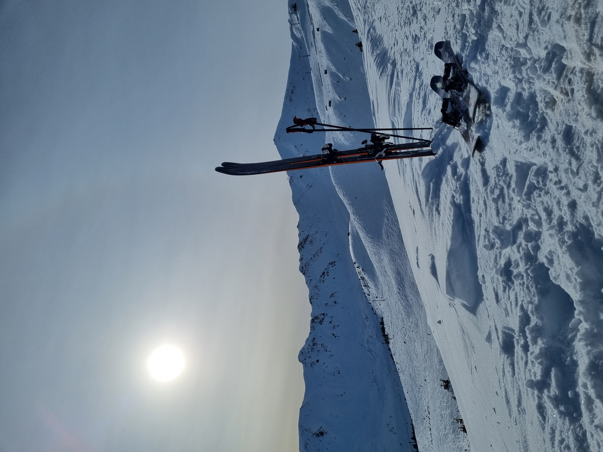
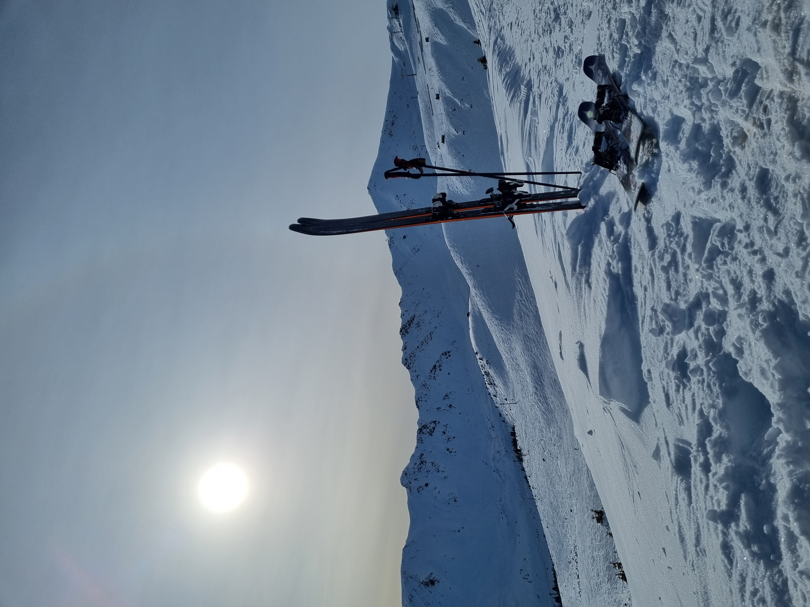

About me
I started my professional carreer during my studies working in logistics departments in international companies. I have over six years of experience providing customer service in various fields.
I moved to Canada in 2018, which was big step for me. I had to start from "scratch" and build my life again. I gained lots of experience in hospitality working in tourist little town called Canmore. I gained my canadian permanent residency in 2021 and since I have been working in local company that focuses on handcrafted personal and beauty products.
 
